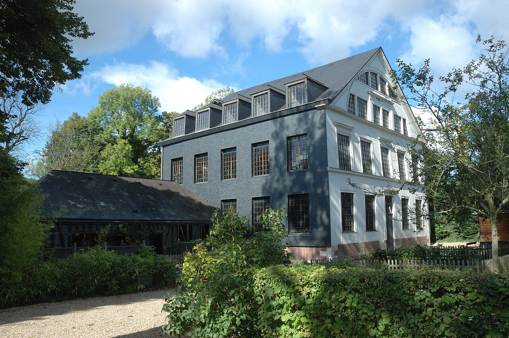

Musée de la Corderie Vallois : fabrication des cordes et machines hydrauliques
Dans cette fiche
L’essentiel pour visiter
Dans la vallée du Cailly près de Rouen, une ancienne usine du XIXe siècle conserve sa roue hydraulique, ses machines et leurs transmissions. Les démonstrations permettent de comprendre comment se fabriquent des cordes câblées et tressées. Les collections permanentes sont gratuites ; il est conseillé de choisir un créneau pour voir les mécanismes fonctionner.


EAU & FIBRES
Comprendre une usine textile du XIXe siècle
À Notre-Dame-de-Bondeville, l'ancienne Corderie Vallois fait partie du paysage industriel de la vallée du Cailly. Les bâtiments à pans de bois, les transmissions et une grande roue à aubes ont été préservés. Les machines d'origine sont toujours mises en marche. La roue transforme l'énergie de l'eau en mouvement mécanique, puis les transmissions entraînent les équipements de fabrication. Le réseau muséal rappelle que la vallée exploitait la force hydraulique dès le XVe siècle ; il ne faut pas confondre cette histoire ancienne avec l'âge des machines du XIXe siècle. Le site montre comment une activité autrefois industrielle a pu être conservée sans être réduite à des objets inertes.
Des machines pour fabriquer des cordes câblées et tressées
La corde câblée s'obtient par torsion de fils et de torons ; la corde tressée repose sur l'entrecroisement des fils. Ces processus n'impliquent pas les mêmes mouvements mécaniques. Le musée donne à voir la transmission de l'énergie, l'action des machines et le produit fabriqué. Le bruit et la répétition des gestes éclairent les contraintes du travail industriel, sans prétendre reproduire toutes les conditions d'une journée d'usine. Les démonstrations commentées sont organisées à 14 h, 15 h, 16 h et 17 h. Le musée annonce une jauge de 15 personnes par créneau ; il est recommandé aux visiteurs individuels de téléphoner avant de venir, et la réservation est obligatoire pour les groupes.
Le jardin de plantes à fibres et tinctoriales
Le jardin, en accès libre, établit un lien entre matières premières et procédés industriels. Les plantes à fibres renvoient aux ressources utilisées dans les textiles ; les plantes tinctoriales évoquent les techniques de coloration. Ce parcours extérieur permet de replacer la fabrication dans une chaîne plus longue : produire des fibres, les préparer, puis les transformer. Il ne signifie pas que chaque plante visible correspondait à une matière utilisée historiquement dans cette corderie. L'intérêt du musée est précisément de relier le paysage naturel et les machines à la production d'objets ordinaires.
Horaires, prix et accès en octobre 2026
Le Musée de la Corderie Vallois est ouvert tous les jours de 13 h 30 à 18 h, avec démonstrations à 14 h, 15 h, 16 h et 17 h. Fermeture les 1er janvier, 1er mai, 1er et 11 novembre et 25 décembre. L'accès aux collections permanentes est gratuit ; les animations ou expositions particulières peuvent suivre d'autres conditions. Adresse : 185 route de Dieppe, 76960 Notre-Dame-de-Bondeville. Téléphone : 02 35 74 35 35. Le site est annoncé entièrement accessible aux personnes à mobilité réduite. Réseau Astuce : TEOR T2 et F4 vers Mairie – Victor Schoelcher, et ligne 16 vers Musée de la Corderie ; vérifier le réseau actuel avant le déplacement.
Choisir la Corderie parmi les musées industriels normands
La Corderie se distingue par ses machines historiques encore en fonctionnement. Le musée de l'Horlogerie montre d'autres métiers de précision ; le musée d'Histoire de la Vie Quotidienne raconte comment les métiers et les objets ont changé les habitudes sociales. Au château de Martainville, les textiles et les costumes sont abordés sous un angle patrimonial plus large. Explorer aussi les musées de Normandie et l'annuaire.